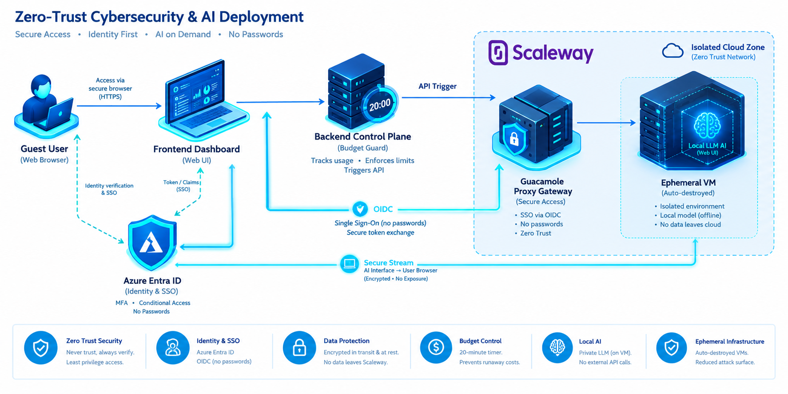

Zero-Trust Ephemeral Workspace
A showcase project demonstrating secure, identity-driven multi-cloud architecture. Combines Azure Entra ID, OpenID Connect (OIDC), and ephemeral computing on Scaleway to provide a strictly time-limited, browser-based session with zero standing privileges.

Workspace Control Panel
Authentication successful. You can now provision a temporary isolated environment.
Budget Guard active: Infrastructure self-destructs after 20 minutes.